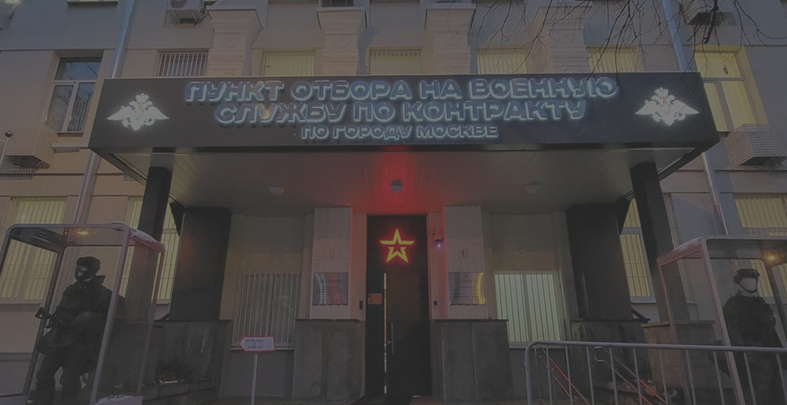

Заключить контракт
на СВО в Москве
Проект по набору добровольцев на службу по контракту “СпецВоенКадр” совместно с администрацией г. Москва поможет вам сориентироваться в актуальных условиях контрактной службы, ответит на все вопросы и обеспечит максимально быстрый и прозрачный процесс.
Заключить контракт
с Министерством обороны в Москве
можно уже сегодня, достаточно позвонить по указанным телефонам и мы возьмем на себя все организационные вопросы: от консультации по требованиям к кандидатам до сопровождения при сдаче медкомиссии и оформлении документов в военкомате. руб. к окладу Министерства обороны (210 тыс. руб.), что в сумме формирует оклад в 260 000 руб.
Благодаря нашей поддержке вы сможете подписать контракт с Министерством обороны быстро и без лишних сложностей. Мы сопровождаем кандидатов на всех этапах, обеспечиваем трансфер до пункта сбора и осуществляем всестороннюю поддержку для заключения контракта МО РФ.
Вы получите полную информацию о выплатах, социальных льготах и гарантиях, для военнослужащих участников СВО. Подпишите свой контракт с Министерством обороны уже сейчас и станьте частью элиты, обеспечивающей будущее нашей страны.

выплаты

(01) Служба
СЛУЖБА ПО КОНТРАКТУ ВС РФ:
— быстро и удобно
Оформите контракт на службу без бюрократии и бумажной волокиты. Всё просто, быстро и удобно благодаря единому информационному центру и доступу в один клик.
Если вы готовы стать на защиту своей страны и её рубежей, мы оплатим билет до пункта сбора, поможем пройти медкомиссию, заключить контракт и получить все положенные выплаты.
оставить заявку
-
260 000 P
стрелок (рядовой);
-
288 000 Р
командир отделения (сержант);
-
300 000 Р
заместитель командира взвода — командир отделения (сержант);
-
1 000 000 P
захват вражеского танка
-
1 000 000 Р
захват HIMARS
-
300 000 Р
уничтожение вражеской ПВО, самолета
-
200 000 Р
уничтожение вражеского вертолета
-
100 000 Р
уничтожение вражеского танка
-
50 000 Р
при участии в наступательной операции за каждый километр продвижения
-
50 000 Р
уничтожение вражеской бронетехники и артиллерии
-
3 100 000 P
единовременная выплата при увольнении вследствие военной травмы
-
3 000 000 Р
единовременная выплата в случае ранения
-
2 200 000 Р
выплата при получении инвалидности Iгруппы
-
1 400 000 Р
выплата при получении инвалидности IIгруппы
-
700 000 Р
выплата при получении инвалидности IIIгруппы
-
300 000 Р
выплата при получении тяжелого ранения
-
78 000 Р
выплата при получении легкого ранения
-
5 000 000 P
единовременная выплата по случаю гибели военнослужащего
-
4 900 000 Р
страховая выплата в случае гибели военнослужащего
-
3 100 000 Р
единовременное пособие в случае гибели военнослужающего
(02) контракт
Оформи контракт на службу
и воспользуйся преимуществами:
3 000 000 P
Гражданство: рф
Возраст: 18 лет
Категория: а б в
Мгновенная выплата после
подписания контракта
210 000 – 400 000 P
Гражданство: рф
Возраст: 18 лет
Категория: а б в
Ежемесячная выплата после
прохождения подготовки
(03) помощь заключения контракта
Быстрое и упрощённое
заключение контракта
-

ОПЛАТА ЖД БИЛЕТА ДО МЕСТА СБОРА
-
УСКОРЕННАЯ МЕДКОМИССИЯ
-
ЕЖЕМЕСЯЧНЫЕ ВЫПЛАТЫ
ОТ 210 000 Р -
социальная поддержка семьи

(04) премии
Дополнительные премии
и бонусные выплаты
поражение вражеской техники


300 000 ₽


300 000 ₽


200 000 ₽


50 000 ₽


50 000 ₽


Получить
консультацию
Хотите профессиональную консультацию?
Свяжитесь с нами и получите ответы на все вопросы!
оставить заявку
Почему важно заключить
именно через Москву
Уже несколько лет в Москве, на улице Яблочкова 5, строение 1, принимают кандидатов со всей страны. Здесь заключают контракты на СВО из всех регионов России. Московский единый пункт отбора на контрактную службу известен своим профессионализмом, радушным отношением к кандидатам и надежностью.
За много лет работы через пункт отбора прошли десятки тысяч контрактников, которые сейчас составляют костяк нашей армии. Все до единого кандидата, заключившие контракт здесь, получили свои положенные выплаты и льготы полностью и вовремя.
Заключая контракт ВС РФ именно через столицу, вы получаете следующую поддержку от городских властей: единовременная выплата в размере 2 300 000 руб. плюс ежемесячная надбавка в 50 000 руб. к окладу Министерства обороны (210 тыс. руб.), что в сумме формирует оклад в 260 000 руб.
При оформлении через Москву у вас есть возможность попасть в мотострелковые соединения, в части ВДВ, и морской пехоты. Также вы можете рассчитывать на службу в артиллерийских дивизионах и подразделениях операторов беспилотных систем. Все эти преимущества делают маршрут на СВО через столицу особенно привлекательным с учетом современных требований и условий военной службы.
Кроме финансовой стороны, мы полностью обеспечиваем логистику вашего приезда: оплатим билет до Москвы за счёт администрации города, обеспечим трансфер и временное размещение в самой Москве, чтобы вы в спокойной обстановке прошли медкомиссию и получили распределение на убытие до части.
После этого остаётся только подписать контракт с Министерством обороны России и получить все положенные выплаты. Если вы готовы присоединиться к числу добровольцев и подать заявку на службу по контракту ВС РФ мы обеспечим вам четкий алгоритм действий и поддержку на каждом этапе.
Важно подчеркнуть, что через Москву идет распределение по всем частям, задействованным в СВО. Помимо уже вышеуказанных мотострелковых и десантных бригад,
наши контрактники проходят
службу в подразделениях:
- логистики,
- БПЛА,
- связи,
- материально-хозяйственного обеспечения войск,
- в частях резерва,
- в другие вспомогательных подразделениях.
Необходимо понимать, что на одного бойца, непосредственно участвующего в штурмовых действиях, приходится около 7-8 военнослужащих, обеспечивающих это наступление, находящихся в обороне, прикрывающих фланги, обеспечивающие поддержку наступающих огнем артиллерии и дронами.
Таким образом, кандидаты, заключающие контракт с МО с нашей помощью, идут не только в штурмовики, но и распределяются по всем подразделениям, где имеется таковая потребность.
Непосредственное распределение в боевые части осуществляется после того, как кандидат заключил контракт.
При распределении
учитывается:
- Имеющаяся у человека военно-учетная специальность (ВУС), если таковая есть у него в военном билете.
- Пожелания самого кандидата где он хочет служить.
- Навыки и умения кандидата.
- Актуальные потребности Министерства Обороны.
Итак, что будет после подачи заявки?
Как происходит
заключение контракта
Если вы хотите заключить контракт, наши специалисты свяжутся с вами и купят вам билет до Москвы из любой точки России. В Москве вы прибываете на вокзал или в аэропорт. Оттуда вас забирает комфортабельное такси, заказанное нами и везет в Единый пункт отбора на контрактную службу по адресу Яблочкова, 5, строение 1.
Если прибытие в столицу ночью, поздно вечером, мы временно размещаем вас в гостинице.
По прибытию в пункт отбора вас направят на военно-медицинскую комиссию. После прохождения ВВК кандидаты
направляются в подразделение для рекрутов “Авангард”.
Именно там кандидаты ждут непосредственного заключения контракта и убытия в боевые части, где будет
происходить распределение.
Как формируется боевой
доход в зоне СВО
Служба по контракту на СВО через Москву открывает перед военнослужащими весьма привлекательные финансовые перспективы. Базовый оклад от Министерства обороны составляет 210 000 руб. ежемесячно.
К нему добавляются
следующие выплаты:
-
8 000 руб. за каждый день участия в активных наступательных операциях;
-
50 000 руб. за каждый километр продвижения в составе штурмовых групп;
-
1 000 000 руб. за захват тяжёлой зарубежной техники – танков Leopard, Abrams, Challenger или реактивных пусковых установок HIMARS;
-
500 000 руб. за уничтожение такой же бронированной техники;
-
100 000 руб. за уничтожение обычного танка;
-
50 000 руб. за уничтожение боевой машины пехоты (БМП, БМД, БТР, МТЛБ);
-
50 000 руб за поражение беспилотного летательного аппарата средней дальности или средств реактивной артиллерии («Точка-У», «Ольха», «Смерч», «Ураган», HIMARS).
Кроме того, благодаря оформлению контракта через Москву каждый контрактник получает мэрскую надбавку в размере 50 000 руб. и единовременную выплату 2 300 000 млн руб., которая приходит в течение первых 15 суток после подписания.
Таким образом в год выходит от 5 420 000 руб. до 7 500 000 руб.
Почему важно заключить
контракт сейчас
В текущих условиях появилось сразу несколько факторов, которые делают подписание контракта особенно выгодным и целесообразным:
1. Высокий уровень боевой эффективности российской армии
Современная тактика нашей армии отказывается от бессмысленных лобовых штурмов. Укрепления противника закидываются огромным количеством планирующих авиабомб (ФАБы, ОДАБы), наносятся удары крупными дронами (Герани), а на короткой дистанции применяется огромное количество небольших дронов, управляемых операторами в том числе на оптоволоконных системах управления.
Старая добрая артиллерия все также работает в полную мощь по врагу. Снарядный голод давно в прошлом, наша промышленность нарастила мощное производство снарядов, которыми наша арта закидывает противника.
Укрепрайоны берутся умением и профессионализмом. В обороне противника находятся слабые места которые прорывают профессионально подготовленные бойцы, как правило на мототехнике. Они стремительно занимают позиции и за ними в прорыв идет вся остальная группировка. Далее перерезаются линии снабжения укрепрайона и противник либо сам отступает оттуда, либо попадает в окружение.
2. Эффективная система подготовки личного состава
Все новые контрактники проходят обучение непосредственно в резервных полках боевых частей. Занятия строятся на отработке индивидуальных приёмов ведения боя, тактическом взаимодействии в составе подразделений, осуществляется боевое слаживание. Инструкторы — офицеры с реальным боевым опытом — оперативно внедряют новые методики, основанные на анализе свежих данных с поля боя. При этом уже в период подготовки новобранцы получают боевой оклад, поскольку они зачислены в штат действующих подразделений.
3. Забота командиров о личном составе
Многие кандидаты, которых мы направили еще в прошлом году, до сих пор с нами на связи, многие служат в боевых подразделениях и поучаствовали уже во многих операциях нашей армии. При этом многие приезжают в отпуска, выходят на отдых в тыл.
4. Широкий пакет социальных гарантий и выплат
Государство продолжает расширять систему льгот и выплат для участников СВО: помимо боевого оклада и премиальных за конкретные достижения, существуют льготы по жилью, медицинскому обслуживанию, пенсионным отчислениям и социальным мерам поддержки семьям контрактников.
Если вы давно рассматривали возможность вступить в ряды вооружённых сил России — сейчас самый подходящий момент. Заключив контракт в Москве по текущим условиям, вы получите высокий стабильный доход, качественную подготовку, поддержку государством и все предусмотренные гарантии.
кто мы
Мы проект по набору кандидатов на службу по контракту "СпецВоенКадр". Работаем под эгидой автономной некоммерческой организации " Центр оказания социальной и гуманитарной помощи "Истина", и вместе сотрудничаем с администрациями городов и регионов. Наша миссия — помощь нашей армии и стране путем набора граждан, стремящихся стать частью вооруженных сил России, посредством заключения контракта на военную службу с Министерством обороны.
За время активной деятельности нами направлено на службу по контракту несколько тысяч кандидатов, зарекомендовавших себя ответственными защитниками Родины.
Что мы
предлагаем:
- Организуем поездку из вашего города до Единого пункта отбора в Москве бесплатно для вас;
- Обеспечим вам комфортную встречу и размещение;
- Профессионально проконсультируем при прохождении медицинской комиссии;
- После заключения контракта способствуем получению всех предусмотренных законом выплат и льгот.
Наша команда стремится обеспечить каждому кандидату максимум внимания, гарантируя комфортные условия и прозрачность процедуры набора на контрактную службу.
Оставляйте заявку на службу по контракту и присоединяйтесь к армии победителей!
Россия ожидает Ваше решение!
Истории наших
КАНДИДАТОВ
Требования
(05) УСЛОВИЯ
ТРЕБОВАНИЯ
ДЛЯ службЫ по контракту
-
01
Возраст от 18 лет
-
02
Состояние здоровья Определят на медосмотре в военном комиссариате
-
03
Срок контракта 1 год, 3 года или 5 лет
ВОПРОС-ОТВЕТ


-
Военная служба оформляется письменно с начальником пункта отбора или командиром части по прибытии, согласно типовой форме. В документе фиксируются:
· Добровольное решение поступить на службу
· Срок службы
· Другие условия и обязательства сторон
- Контракт заключается на 1 год, 3 года или 5 лет.
- Решение по заключению контракта на военную службу принимается членами совместных комиссий пунктов отбора и военных комиссариатов.
- Подходит ли кандидат для военной службы по контракту, определят после медицинского осмотра военно-врачебной комиссии в военкомате.
- Иностранный гражданин может заключить контракт с ВС РФ на срок 1 год.
- Единовременная выплата 1 000 000 руб. осуществляется в течении 15 дней после заключения контракта. Далее идут выплаты от 210 000 руб. в месяц. Выплаты зачисляются на банковский счёт контрактника, к которому привязана карта «Мир». Реквизиты счёта указывают в пункте отбора на военную службу по контракту. Если карты «Мир» нет, контрактнику будет открыт счёт в банке.Все выплаты начисляются в автоматическом режиме.
-
Для контрактников, принимающих участие в СВО, действуют специальные программы кредитных
каникул и реструктуризации.
По банковским договорам:
- не начисляются неустойки, штрафы и пени
- не предъявляются требования о досрочном исполнении обязательств
По ипотеке:
- приостанавливаются взыскание просроченной задолженности и обращение взыскания на ипотечное жильё
- участников СВО и членов их семей не могут выселить из ипотечного жилья, на которое ранее было обращено взыскание.
- Период участия военнослужащего в Специальной Военной Операции засчитывается в страховом стаже день за два.
- Можете, но в Вашем регионе скорее всего Программа поддержки не обеспечивает такие выплаты как по «Программе регионов», представленной здесь.
- Для Вас это бесплатно. Мы также покупаем билеты от Вашего города до точки сбора, выдаем Вам суточные, кормим, и координируем для наиболее быстрого прохождения военно-врачебной комиссии и заключения контракта.
- Главное иметь паспорт и знать номера ИНН и СНИЛС (а если Вы их не знаете, то мы Вам подскажем как их узнать). Можно без военного билета.
Для иностранцев
-
Военная служба оформляется письменно с начальником пункта отбора или командиром части по прибытии, согласно типовой форме. В документе фиксируются:
· Добровольное решение поступить на службу
· Срок службы
· Другие условия и обязательства сторон
- Контракт заключается на 1 год, 3 года или 5 лет.
- Решение по заключению контракта на военную службу принимается членами совместных комиссий пунктов отбора и военных комиссариатов.
- Подходит ли кандидат для военной службы по контракту, определят после медицинского осмотра военно-врачебной комиссии в военкомате.
- Иностранный гражданин может заключить контракт с ВС РФ на срок 1 год.
- Единовременная выплата 1 000 000 руб. осуществляется в течении 15 дней после заключения контракта. Далее идут выплаты от 210 000 руб. в месяц. Выплаты зачисляются на банковский счёт контрактника, к которому привязана карта «Мир». Реквизиты счёта указывают в пункте отбора на военную службу по контракту. Если карты «Мир» нет, контрактнику будет открыт счёт в банке.Все выплаты начисляются в автоматическом режиме.
-
Для контрактников, принимающих участие в СВО, действуют специальные программы кредитных
каникул и реструктуризации.
По банковским договорам:
- не начисляются неустойки, штрафы и пени
- не предъявляются требования о досрочном исполнении обязательств
По ипотеке:
- приостанавливаются взыскание просроченной задолженности и обращение взыскания на ипотечное жильё
- участников СВО и членов их семей не могут выселить из ипотечного жилья, на которое ранее было обращено взыскание.
- Период участия военнослужащего в Специальной Военной Операции засчитывается в страховом стаже день за два.
- Можете, но в Вашем регионе скорее всего Программа поддержки не обеспечивает такие выплаты как по «Программе регионов», представленной здесь.

контакты


Телефон:
+7 (964) 881-97-35Телефон:
+7 (499) 686-93-44
Ещё один решающий рывок
— и конфликт с противником будет закрыт!!!